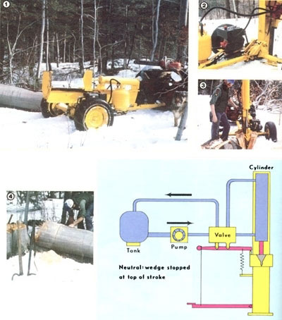
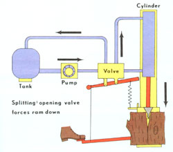
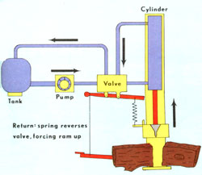

Upstate New York's long cold winters force just about everyone who heats a home with wood to spend a lot of time wielding a chain saw and swinging a maul . . . and lots of folks build their own splitting machines to ease the workload. Now many of the homemade rigs can sever dang near anything (including, in some cases, rock!) ... but I've never seen an other splitter that's as easy to use as my own hydraulic machine.
I've always found that the most tiring part of chopping wood with a standard hydraulic splitter is simply lifting the heavy rounds into position. So, I designed a different sort of wood chopper ... one in which the cylinder moves vertically, to slice through logs that are just placed on a ground-level platform underneath the machine's cutting edge.
Whenever I'm ready to process a load of firewood, I merely roll the chunks up to the machine and-one by one-ease them onto the low base plate, where they can be knocked apart. Then, once they're halved, I simply move each hunk back under the wedge for further division.
My log splitter's foot pedal assembly, which allows me to operate the machine and have both hands free for positioning the wood or throwing the split lengths in to a near by pile contributes still further to the machine 's ease of operation. The pedal is attached to a strong spring that pulls the control lever into its "up" position when I take my foot off the control. That way, I can walk away from the splitter-or roll the next to-be-chopped log into place -while the 27-inch-long cylinder continues to rise, since it will shut off automatically when the stop attached to the wedge hits the end of the valve and moves it back into the neutral position. (You can see how that process works in the accompanying diagrams.) And although I've adapted my pedal-and-valve operation to a vertical setup, at could just as easily be used to control a horizontal machine.
In order to be able to transport my log topper into the woods, I mounted the whole hydraulic system on an old automobile axle which is towed by way of a V-shaped framework (see the accompanying photo). The 5" X 10" steel I-beam (which is attached to the cylinder and wedge) is then fastened to a bracket mounted on the axle, so that it can be pivoted downward to ride on top of the middle bar of the towing apparatus.
You can see, then, that the vertical hydraulic wood splitter is an ideal, and readi ly transportable, tool for ail-but-effortless woodcutting. With this efficient machine, I can reduce the biggest trees on my woodlot to a neat stack of firewood . .. without having to lift a single log! And that's what I call energy conservation!
EDITOR'S NOTE: It you'd like to make a more conventional automatic lumberjack, see"Mother's Hydraulic Super-Splitter"
PLANNING TO BUILD ONE YOUSELF? HERE ARE A FEW HINTS
In order to be sure that your homemade wood splitter will operate at its peak efficiency, glance over the following tips before you begin the construction.
I recommend a cylinder that measures more than Q" in diameter and an engine that has at least 5 HP. It's best, also, to have a doubleacting cylinder . . . but the single type can be used in conjunction with springs. (The stroke of the cylinder can be determined by the length of log you plan to split. Add a few inches for "insurance".)The wedge's blade should be sharp, of course . . . but it should also be wide enough to push apart the halves of each log.Any hydraulic system must have a pressure relief valve to prevent damage. (Most control valves contain one.) Set the relief valve to cutoffjust before the engine stalls.Don't use steel water pipe for the hydraulic line: It isn't able to stand the kind of pressure (2,500 PSI or more) that's generated.Useonly clean hydraulic oil or nondetergent motor oil.The hydraulic pump must be a positive displacement type, either gear or vane pump.The cylinder should be secured at both ends.Be certain that the tank is vented properly.Make sure all the components of your splitter are super-strong.The sliding wedge should operate smoothly and freely . . . but it has to ride snugly enough on the I-beam to prevent it from twisting and jamming during operation.The suction line (a hose that runs between the tank and the pump) should be larger in diameter than the pressure line, since it's easier to push than it is to pull the oil.The return line doesn't have to be high-pressure hosing.
|
 |
 |
 |